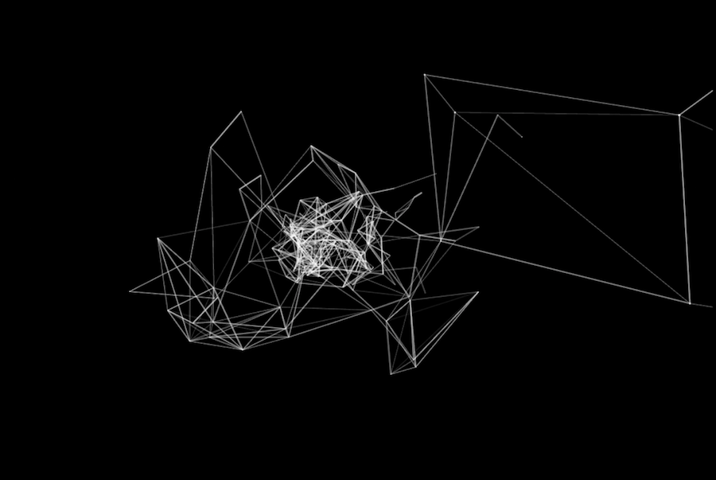
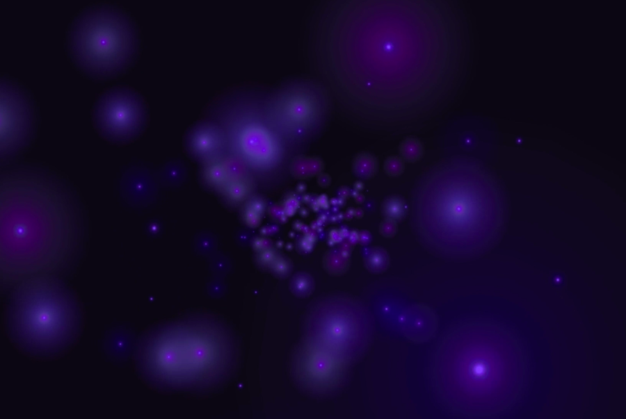

Space travel was a project for Software Art class at NYU Abu Dhabi. It is a constellation generator which creates constellations while giving the illusion of travelling through space. There are 500-700 stars being drawn on the screen. With each frame the stars travel from the back of the screen towards the front.
The stars are ellipses with a brighter central point and the constellations are created with lines being drawn between certain stars depending on the distance between them. The colors used are just black and white (with different opacity levels) in order to emphasize the contrast between the media and the objects.
As a star reaches the front of the screen and goes out of view, it is redrawn again in the back of the screen, however not in the same location as previously. Therefore, as new stars are being redrawn, new constellations keep forming because the stars are not in the same positions as before.
The created interface for this project allowed me to proceed further and try out changing different variables like the size of the stars, the amount of the lines drawn, the speed, colors, etc. In result, I came up with different variations.
experimenting with colors and sizes of the ellipses
Built with: OpenFrameworks